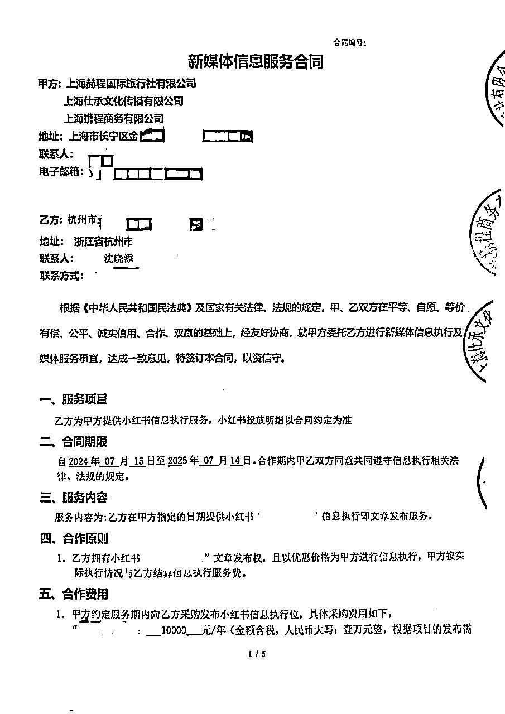

来源：https://cpfawhoevq.feishu.cn/docx/XwyhdCxtDoHuSQxbfrtcl8yVnIc
目录
一、为什么走上全职搞钱这条路？
为什么会走上全职搞钱这条路？坦白说，是因为我工作上有太多不顺心的遭遇。
我20年疫情后离开上海，来到杭州一家教育机构工作，虽然基本薪资从1.2w降到0.8w，但我觉得教育行业非常有前景，并且在新的职场，我的能力也得到了施展，业绩节节攀升，能力也被领导认可。
可工作了两三个月，我发现公司业务的味道越来越不对。收割客户的举措越来越多，对用户体验莫不关心，这都跟我的价值观背道而驰。
我内心一直煎熬，我跟当时的同事说过这么一句话，“你认为在这儿挺好的，而我却恰恰相反”，虽然收入已经到了非常可观的数字，但我还是告诉自己，这样的钱不挣也罢。
在20年12月，我离了职，和三个同频的伙伴开启了创业路，想踏踏实实地把教育事业做好。
然而小白创业谈何容易？
刚开始也赚了一些钱，21年7月双减突然而至。手头的优质客户无法继续服务，新客户也不能开发了。
我们合伙人内部沟通之后，放弃了原有的业务模式，也进行了不同业务的探索，未能达到我们的短期预期，连续两个月没有稳定收入的状态之后，我跟大家商量，终止了合伙关系。
随后，我和新的伙伴开始合作线上流量增长，新业务也取得了一些成绩，半年时间，我们做了40+场次活动，单场最高营收23w，但在双减的大势之下，我觉得终究不是长远之计。
经过了一段时间的调整后，我回到了自己熟悉的工作——加盟商运营，收入和生活都步入了平稳发展期。
但是，我一直有种感觉就是——温水煮青蛙。下班回家的路上，我经常会不自觉的想：这是我想要做一辈子的事情吗？这是我愿意投入热情的事业吗？
（年会上代表项目组登台献唱）
我的脑海里始终有个声音盘旋着，你要达到比原来在上海更高的收入。我慢慢意识到，我需要一份副业来支撑我两条路走路。
二、在职场如何过渡到自由职业这条路？
从22年底我就开始尝试副业，付费了两个项目，小红书幼师资料、淘宝虚拟店铺。
这两个我同时在实操，利用每天下班的时间，幼师资料反馈还是挺快的，半个月不到的时间，我就赚到了第一笔巨款：15块。于是，我就攒足劲，不断创作内容，发布，引流私域，一个个转化，一个月不到，赚了差不多三百块。
这样的方法看起来有点笨，这也是我自己在过程中悟到的一个搞钱经验，就是小白期一定不要看不起小钱，跑通0-1才是最重要的，而且小钱才是普通人能踏踏实实赚到手的。
淘宝虚拟店铺起色不会那么快，我也一直保持着选品，上架，也在差不多一个月的时候，成交了两单，7.9+8.6=16.5元。除了两单补单，截止12月底，赚了60.9元。
23年四月初，我加入了生财，决定在赚钱社群里去熏陶，去锻炼自己的商业能力，同时，去筛选好的赚钱项目。期间，我还实操了资料引流、小红书店铺、抖音直播等项目，都跑通了闭环，赚到了第一块钱，我发现，原来赚钱可以有如此多的方法和种类。
后来由于工作调整，我的业余时间变少了，权衡之下放弃了小红书幼师项目，把精力都放在探索新项目，以及，我认为更有潜力的淘宝店铺上。
这也是我悟到的第二个经验：做副业一定要做精做深，精力在哪钱就在哪。
果然随着我的不断研究，店铺也不断的有起色，接下来半年，已经稳定在月均3k以上了。
于是我就花更多的精力，去挖掘商品，让我可以有更大的利润空间，到了10月份，店铺+微信私域，销售额为11254，利润率在80%，加上另一个店的1000多，这是我第一次意义上，店铺单月利润破万。那一刻，我心里有个声音，我是不是也能通过赚钱项目养活自己。
又经历了好几个项目的历练之后，我清楚地意识到，通过项目赚钱养活自己的可行性越来越大。
24年的春节后，公司的业务和人员有了不少的调整，让我的内心引发了阵阵不安和焦虑，虽然我的工作可以继续做下去，但是更多的工作量，和增长严重放缓的项目现状，让我觉得，离开就是时间的问题。
我盘点了自己的现状，作为将满35岁的男人，2020年10月开始背上房贷之后，想继续留在杭州，我的工作就必须具备三个条件：
我想了想，我的年纪，加上当下的就业行情，我自己做老板，我都不想雇自己。
所以，我想到的唯一的解决办法就是：辞职在家做自由职业，自己给自己打工，只有这样，才能做到生活恋爱收入兼顾。
于是，不破不立，4月份处理完家里的私事后，我决定，在工作一周年——这个有象征意义的时间点，选择离开。
三、如何做到四个搞钱项目都赚到五位数的？
截止目前为止，我自己下场操作的项目20+，破五位数收益的分别是淘宝虚拟店铺、小红书广告、小程序撸茅台、视频号口播带货
首先是淘宝虚拟店铺，22年10月开始做，花了半年时间，开始有了起色，23年3月到12月，总销售额36857，当然，还不包含私域的成交大概1w多。除去一开始有两百块不到的补单，总体利润率80%（因为有小部分是代理软件，有成本），再刨除固定运营成本，网盘和自动发货软件，每月各15块，一年固定成本360,，利润大概37000+。
同年的八月和十月，陆续开了二店和三店，赚到不少钱也踩了一些坑，这块大家感兴趣的话可以告诉我，有机会再详细聊。
整个24年，我基本在忙于工作和其他项目上，所以店铺这块，也没怎么上心，不过长尾效应一直有，一店全年15226，利润率90%（很少的软件收有成本），二店全年4390，都是纯利润（发货软件的成本就忽略了，哈哈），加起来，我有了18093的睡后收入，还挺香的。
第二个，小红书广告，23年11月，我看到了票务赛道的机会，12月和另外三个小伙伴一起（这几个伙伴也都来自生财，很感谢大家当时对我的帮助），我们想看看这个赛道的机会到底如何，于是我们明确了分工，确定了只做小红书平台的引流。
当时我们做了账号测试，同时，启动了押金制，带着五十个学员，一起开启了账号测试，我们花了三周时间，对于卖票和收代理，收益确实不多，加起来也就三千多，另外，有几百块的商单收益。我们做了下总结，判定：没有找到稳定收益的账号类型和票务资源，于是，我们就停止了测试，不再投入精力。结束后，我的其中一个账号，还在继续更新，在24年5月份，收到了携程合作的邀请，经过了测试之后，满足合作要求，7月份签订了一年的合作合同，金额一万块，虽然不多，但胜在工作量不大，每天几分钟就可以完成。

第三个，小程序撸茅台。23年12月份，我发现，我关注的几个大佬陆续都在下场，大范围地干起了撸茅台，我自己梳理了下，发现并没有想象中的那么难，况且，不赚钱也不会有啥损失嘛，立即下场开干。谈好收购渠道之后，我就开始下场实操，1.9日建群，除开中间的春节休假，截止3月底，两个月左右的时间，每天维护一个一百多人的群，我们共计约到了21单，加上我自己的3单，赚了21*400+3*1000=11400。4月份，茅台的行情开始不好，5月份项目就截止了。
第四个，视频号口播带货。4月底离职后，我全身心投入到这个项目中，我基本都是做真人出镜口播带货，一共做了12个账号（不包含合作账号），每天工作10小时以上，除了吃饭睡觉，基本都在项目上，5.24日，赚到了第一块钱，我发了条朋友圈，开始进阶更高的目标。接下来1个月的时间，我就赚到了五千多，尝到了红利的滋味，7月份开始，招募更多的账号合作，并尝试做数字人带货，接下里的时间，收益忽高忽低，一共赚了几万块。截止10月，我干废了5个号。我决定开始转型，做高质量内容，等我摸索出好的赚钱路径，再和大家分享。
其实，比起赚到的那些钱，更重要的是，别走弯路，别掉到坑里。列举几个对我影响比较大的，给大家避避坑。
第一个坑，信息源太窄。
上面我有提到，2022年11月的时候，我付费学习了小红书幼师资料引流，当时是被我放弃掉的项目。事后通过圈友的交流，我才知道，当时我们付费群中有一个学员，每天都能赚到三千以上，一开始以为是庞大的账号矩阵，或者投广告做到的，后面发现，就是一个99%的人，当时并不知道的信息差——爆款搬运混剪（当然，就当时两个月左右的时间能做），而我们其他人都跟着教程，辛苦地做着原创。
这个项目给我的教训，我会一直铭记，多链接真正拿到结果的人，得到一手信息，并验证。
第二个坑，自以为是，不重视平台规则。
2023年8月，我启动了淘宝第二家店，我自认为找到了一个垂直赛道，可以做一个垂直的店铺，差不多两个月的时间，我赚到了一万多点，当我在沾沾自喜时，我的店铺直接被官方三振处罚关闭，同时要支付6000的罚金，当时搜索了相关信息，无法判断是否可通过第三方重新开店，于是请教了淘宝大佬，告知“割韭菜，没用的”，果断省下八百元的费用，在此再次感谢大佬（也是咱生财圈友哈）。
回头看当时的自己，犯的重大错误有两个：1、官方第一次提醒没有重视，2、对平台规则没有提前了解清楚
第三个坑，面对看似好项目，脑子一热就干。
24年9月份，发现了快手数字人直播项目。原理就是，搬运视频号正在爆的某个单品的视频到快手，依靠免费数字人直播间，承接视频自然流和投放的用户流量，转化为销售额。看到对标账号的收益，一个月就达到3万多，于是付费学习，学完用5个账号进行了实操，投放ROI一直没办法打正。重新复盘这个项目会发现，供应链符合打品的商品数量太少，爆品的流量打法没办法复制到其他商品上，还有很重要的一点，快手的利润率比视频号低20%-30%。
通过这个项目，想跟大家讲的是，短期的好项目，要把深层的要素，提前判断清楚。
第四个坑，项目数据背后的关键信息，你掌握了多少
11月份，和圈友一起做了跨境电商的项目，我们尝试了很多种风格的内容，去发布带货视频，结果并没有达到我们的预期。通过那段时间的经历，我们发现，原来跨境项目可以有如此多的关键信息。我们都吸取了教训，意识到，当团队不具备资源和实力的时候，数据只是空中楼阁。因为这个项目的具体情况，属于圈子里的保密信息，就不做展开了。
2025年，在赚钱这件事情上，我给自己设定了几个要求：
在这几点要求下，我思考良久，
我对自己提出了更明确的目标：通过项目的合作，深度陪伴300个在搞钱路上的伙伴。只有对方赚钱了，我才能赚钱，这样的合作模式，我们才能持续，能更长久地一起走下去。
以上种种，都是我过去两年多赚钱道路上的血泪史，也是我在生财第一次写帖子，觉得有收获的欢迎给我点赞，也欢迎跟我一起交流。